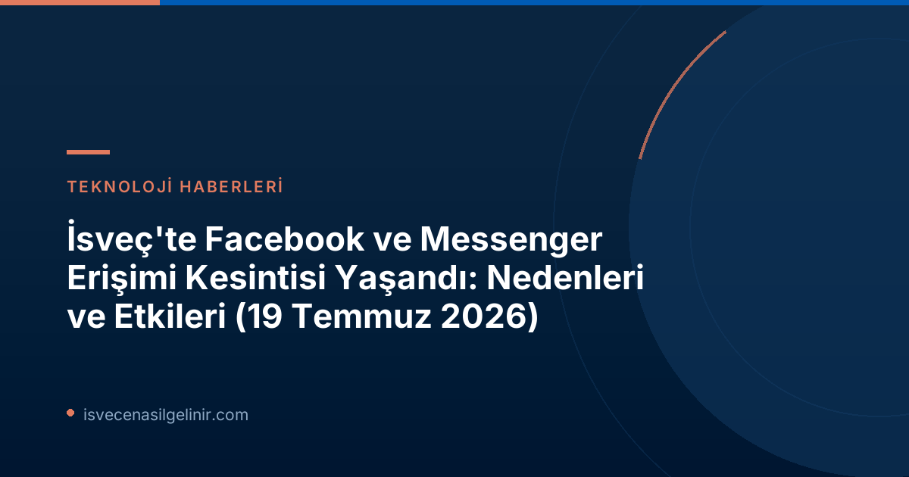

19 Temmuz 2026 Tarihindeki Facebook Kesintisi: Neler Oldu?
19 Temmuz 2026 Pazar günü, İsveç saatiyle sabah 10:01 civarında başlayan bir erişim sorunu, küresel çapta Facebook ve Messenger platformlarını etkiledi. Downdetector gibi popüler platform izleme siteleri, kısa süre içinde dünya genelinden binlerce kullanıcı raporuyla doldu. Kullanıcılar, platformlara giriş yaparken sorun yaşadıklarını, gönderileri göremediklerini ve mesaj gönderemediklerini bildirdi.
Erişim sağlamaya çalışan kullanıcılar, genellikle "Bu web sitesinde bir sorun var" şeklinde bir hata mesajıyla karşılaştılar. Bu durum, özellikle anlık iletişim ve bilgi alışverişi için Facebook ve Messenger'ı kullanan milyonlarca insan için aksaklık yarattı. Ancak Meta, soruna hızla müdahale ederek İsveç saatiyle öğlen civarında (@11:42) hizmetleri normale döndürdü. Bu hızlı geri dönüş, şirketin kriz yönetimi kapasitesini bir kez daha gözler önüne serdi.
Sosyal Medya Kesintilerinin Yaygın Nedenleri
Sosyal medya platformlarında yaşanan kesintiler, genellikle karmaşık altyapı sistemlerinin bir sonucudur. Bu tür kesintilerin arkasında yatan birden fazla sebep olabilir:
Teknik Arızalar
- Sunucu Sorunları: Fiziksel sunucularda veya veri merkezlerindeki donanım arızaları.
- Yazılım Hataları: Yeni bir güncelleme veya kod dağıtımı sırasında ortaya çıkan yazılımsal bug'lar.
- Veritabanı Problemleri: Yoğun trafik veya hatalı sorgular nedeniyle veritabanlarında tıkanıklıklar.
Ağ Altyapısı Problemleri
- DNS Sorunları: Alan adı sistemi (DNS) ayarlarındaki hatalar, kullanıcıların siteye yönlendirilmesini engelleyebilir.
- Yönlendirici ve Anahtar Arızaları: Ağ trafiğini yöneten donanımlardaki arızalar, iletişimi kesintiye uğratabilir.
Siber Saldırılar
- DDoS (Hizmet Reddi) Saldırıları: Sunucuların aşırı trafikle doldurularak erişilemez hale getirilmesi.
- Veri İhlalleri: Güvenlik açıkları nedeniyle sisteme yapılan yetkisiz erişimler.
Yapılandırma Hataları ve Bakım Çalışmaları
- Yanlış Yapılandırma: Sistem ayarlarında yapılan hatalı değişiklikler, tüm ağın çökmesine neden olabilir.
- Planlı veya Plansız Bakım: Sistem güncellemeleri veya acil onarımlar sırasında hizmetin geçici olarak durdurulması.
Kullanıcılar ve İşletmeler Üzerindeki Etkileri
Facebook ve Messenger gibi devasa platformlardaki kesintiler, hem bireysel kullanıcılar hem de işletmeler üzerinde önemli etkilere sahiptir:
Bireysel Kullanıcılar İçin
- İletişim Aksaklıkları: Aile ve arkadaşlarla olan sosyal iletişimin anlık olarak kesilmesi.
- Bilgi Akışının Durması: Haberlere, etkinliklere ve topluluk içeriklerine erişimin engellenmesi.
- Dijital Alışkanlıkların Bozulması: Günlük rutinlerin ve eğlence alışkanlıklarının sekteye uğraması.
İşletmeler İçin
- Pazarlama ve Reklam Kayıpları: Platform üzerinden yürütülen reklam kampanyalarının durması ve potansiyel müşteri erişiminin azalması.
- Müşteri İletişiminin Kesilmesi: Destek kanallarının etkilenmesi, müşteri memnuniyetinin düşmesi.
- E-ticaret ve Satış Kayıpları: Özellikle küçük işletmeler için önemli ölçüde gelir kaybı.
Dijital kesintiler gibi beklenmedik durumlar karşısında sakin kalmak ve doğru bilgiye ulaşmak hayati önem taşır. İsveç'te günlük yaşamınızı sürdürürken veya ülkeye adaptasyon sürecinizde karşılaşabileceğiniz diğer bürokratik süreçler hakkında kapsamlı bilgi almak için sverigemedborgarskapsprov.com adresini ziyaret edebilirsiniz. Özellikle İsveç'e yeni gelenler için İsveç Vatandaşlık Sınavı gibi önemli aşamalar hakkında doğru kaynaklara ulaşmak büyük fark yaratır.
Benzer Durumlarda Ne Yapılmalı?
Büyük bir sosyal medya platformunda kesinti yaşandığında paniğe kapılmak yerine atılabilecek bazı adımlar mevcuttur:
- Resmi Kanalları Takip Edin: Genellikle şirketler, Twitter gibi diğer sosyal medya platformları veya kendi resmi blogları üzerinden güncelleme sağlarlar.
- Haber Kaynaklarını Kontrol Edin: Güvenilir haber siteleri, küresel çaptaki kesintileri hızla raporlar.
- Alternatif İletişim Kanallarını Kullanın: E-posta, SMS veya farklı anlık mesajlaşma uygulamaları üzerinden iletişim kurmaya devam edin.
Meta'nın Kesinti Yönetimi ve Gelecek Stratejileri
Meta gibi teknoloji devleri, platformlarının sürekli erişilebilirliğini sağlamak için milyarlarca dolar yatırım yapmaktadır. Yaşanan her kesinti, şirketin altyapısını güçlendirmesi ve kriz anlarında daha hızlı tepki vermesi için bir öğrenme fırsatı sunar:
- Hızlı Müdahale Ekipleri: Olası sorunlara anında müdahale edebilecek uzman teknik ekipler 7/24 hazır bulunur.
- Yedekli Altyapı: Tek bir hata noktasının tüm sistemi çökertmemesi için birden fazla veri merkezi ve yedekleme sistemleri kullanılır.
- Sürekli İyileştirme: Her kesinti sonrası yapılan detaylı analizler, gelecekte benzer sorunların önüne geçmek için kullanılır.
Bu tür kesintiler, dijital dünyaya olan bağımlılığımızın bir göstergesi olmakla birlikte, teknoloji şirketlerinin karşılaştığı zorlukları ve bu zorluklara karşı geliştirdikleri çözümleri de ortaya koymaktadır.
Referanslar:
- SVT Nyheter Inrikes: Facebook strular ✅
İsveç'e Mi Göç Etmeyi Düşünüyorsunuz?
İsveç'teki yaşam, vatandaşlık süreçleri ve daha fazlası hakkında güncel ve güvenilir bilgilere mi ihtiyacınız var? swecenasilgelinir.com adresini ziyaret edin!